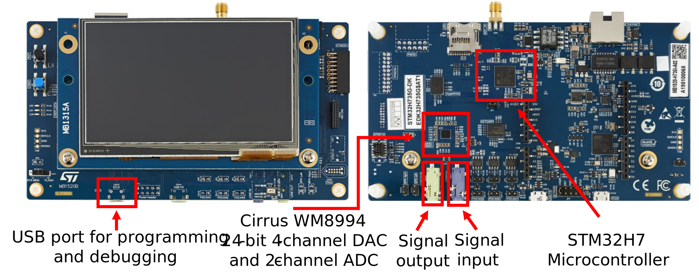
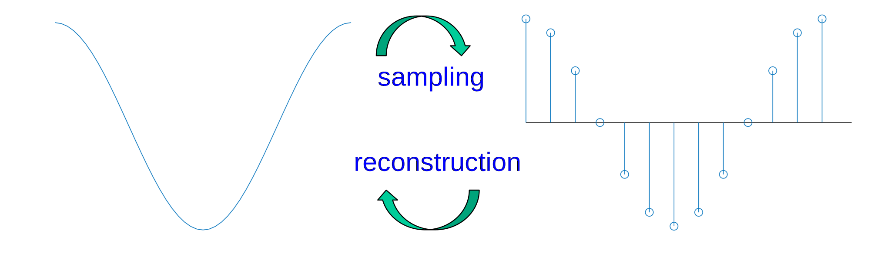
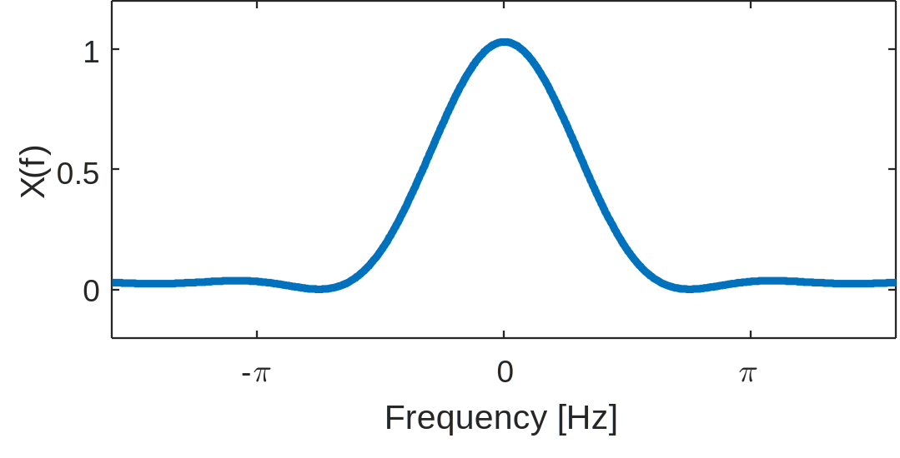

Lab 0. Review of Prerequisites (Optional)#
There are several topics from software design, embedded systems, and linear systems that we will review before building upon in subsequent labs. Additionally, we will review the basics of MATLAB and C programming.
Attendance for Lab 0 is optional. There are no graded assignments associated with lab #0.
For lab #0 only, you may attend remotely through zoom. All other labs require in-person attendance for access to the hardware.
Attending lab #0 in person will allow you to access the hardware to get a head start on lab #1.
Hardware Overview#

C Programming#
Data Types#
C language does not provide exact rules for data types
Example:
intMust be at least 16 bits, but can be larger
Must include the range [−32,767, +32,767]. Often, -32,768 is included as well.
Toolchain used in lab provides exact specifications for data types
int16_t16-bit signed integeruint32_t32 bit unsigned integerfloat32_t32 bit (single precision) floating point
Pointers and functions#
Example: measuring clock cycles
uint32_t* systick = (uint32_t*) 0xe000e018;
void tic(void)
{
t = *systick;
}
uint32_t toc(void)
{
return t - *systick;
}
Arrays and for loops#
Example: cosine lookup table
int16_t table[16];
float32_t amplitude;
flat32_t omega0 = 0.0576;
for (uint32_t n = 0; n < 16; n+=1)
{
amplitude = arm_sin_f32(n * omega0);
table[n] = OUTPUT_SCALE_FACTOR * amplitude;
}
Linear vs circular buffer#
Example: Shift all elements of an \(N=16\) element array and add a new element to the start.
Linear buffer#
float32_t x[16] = {0};
.
.
.
void linear_buffer_shift(float32_t new_element)
{
for (uint32_t n = 15; n >0; n-=1)
{
x[n] = x[n-1];
}
x[0] = new_element;
}
Circular buffer#
float32_t x[16] = {0};
int32_t position = 0;
.
.
.
void circular_buffer_shift(float32_t new_element)
{
position = (position-1) % 16
x[position] = new_element
}
MATLAB#
Data Types in MATLAB#
By default, every variable in MATLAB is a 2d array of double precision floating point values
To use another datatype, call the corresponding function (
single(),int16(),uint32(), etc)View the size and type of variables using the
whos()functionBy default
iandjrepresent \(\sqrt{(-1)}\). Be careful naming variables that overwrite these!Data automatically become complex if any multiple of
jis added, e.g.1-3j
Vector and array operations#
You can use for loops to perform vector and array operations
Most of the time, there is an easier and more computationally efficient way
A = [1,2,3
4,5,6];
B = [7,8,9
3,2,1];
Element-wise product of two matrices using for loops
for i_row = 1:2
for i_col = 1:3
C(i_row,i_col) = A(i_row,i_col) * B(i_row,i_col);
end
end
A = [1,2,3
4,5,6];
B = [7,8,9
3,2,1];
element-wise product of two matrices using .* operator
C = A .* B;
Matrix-matrix product using * operator and ' for transpose.
C = A * B';
Creating plots#
To describe your plot to MATLAB, give the
plot()function the (x,y) coordinates of each point you want to plotPut all of the x coordinates in a vector and the y coordinates in a second vector
Use
plot(x,y)to represent continuous signalsUse
stem(x,y)to represent discrete signalsCall the
figure()function before a plot to put it in a new windowUse
hold on;to overlay on the previous plotUse the incantation
set(0,'DefaultFigureWindowStyle','Docked')to keep all figures in the same window but make an new tab for each
Floating point#
Integer and other fixed-point data types have the same spacing between all possible values
Useful for representing natural numbers or the value read from ADC
Distance between adjacent floating point numbers is variable
Useful for representing filter coefficients
Less build up of error for sequences of operations compared to fixed point
Single precision (near 1.0) is roughly equivalent to 8 decimal points
Largest possible value is about \(3.4 \times 10^{38}\)
Near zero, the smallest distance between values is about \(1.4\times 10^{-45}\)
Linear Systems and Signals#
Sampling and Reconstruction#
Sampling (continuous-time to discrete-time conversion)
\(x[n] = x(n T_s)\)
Reconstruction (discrete-time to continuous-time conversion)
A continuous-time signal \(x(t)\) with frequencies no higher than \(f_{\text{max}}\) can be reconstructed exactly from its samples \(x[n] = x(n T_s)\) if samples are taken at a sampling rate \(f_s > 2f_{\text{max}}\)

Transforms#
Preview of the different transforms we will use in this class:
Laplace transform
Z-transform
Fourier transform
Discrete-time Fourier transform (DTFT)
Fourier series
Discrete Fourier transform (DFT, a.k.a FFT)
All of these have certain properties in common (with a few caveats)
\( \text{Multiplication} \leftrightarrow \text{Convolution} \)
\( \text{Stretch} \leftrightarrow \text{Contract}\)
Fourier transform example#
What is the fourier transform of \( x(t) = \left(1+\cos(2\pi t)\right) \left( \text{rect}(t) \right)\) ?

The Fourier transform of a constant \(1\) is \(\delta(f)\).
The Fourier transform of \( \cos(at) \) is \(\frac{1}{2}\left[ \delta(f-\frac{a}{2\pi}) + \delta(f+\frac{a}{2\pi}) \right]\)
The Fourier transform of \( \text{rect} (t) \) is \(\text{sinc}(f)=\frac{\sin(\pi f)}{\pi f}\)
Multiplication in time domain is convolution in frequency domain
Sifting property: \(f(t) * \delta(t-t_0) = f(t-t_0)\)
